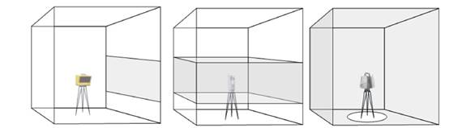
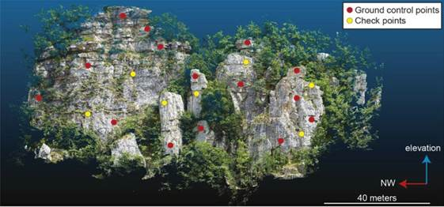

Back to Portfolios
Back to Portfolios
Utility of Terrestrial Laser Scanning (TLS) in Geoscience
Purpose: Research paper project Semester: 1st (Fall) Project date: 18 October 2023 Skills: Research writing, LiDAR, Geology, Remote SensingUtility of Terrestrial Laser Scanning (TLS) in Geoscience
Ashish Mahaur
Department of Civil, Environmental, and Geospatial Engineering
Michigan Technological University
SU 5142 Terrestrial LiDAR Scanning (Jeffery Hollingsworth)
18 October 2023
A B S T R A C T
Coming from a geology background, I was acquainted with using various applications of remote sensing technologies in the field of Earth science research. There are significant benefits of utilizing LiDAR technology in terrain analysis on a large scale at very high precision. This technology has increased rapidly in the last two decades (J. Telling et al., 2017), improving the spatial and temporal resolution of data. The majority of precise and detailed topographic models are derived from LiDAR operations which are being utilized as a fundamental resource across various Earth science research disciplines. However, among these operations, Airborne Laser Scanning (ALS) has become a standard tool for a wide range of Earth science applications due to its significant advantage over a Terrestrial Laser Scanner (TLS). In this paper, I researched to identify in what circumstances data acquired using TLS can be helpful over any other LiDAR technology, particularly in the field of geology and what factors need to be taken care of while utilizing TLS.
1. Introduction
Terrain analysis using high-resolution topographic models such as the Digital Elevation Model (DEM) or Triangulated Irregular Network (TIN) are standard tools for observations. These models are derived from one or the other LiDAR (Light Detection and Ranging) technologies. Scans that take place on the ground with a static position are called Terrestrial laser scanning (TLS) whereas if the scans are collected on a ground-based moving vehicle they are termed as Mobile laser scanning (MLS). Airborne laser scanning (ALS) on the other hand collects data on an aircraft. ALS usage has increased significantly over the years and it has started to become a norm for data collection in geoscientific research despite the fact that they are more expensive and complex to operate (requirement of GNSS sensors for accurate point georeferencing). This is due to the fact that ALS uses near nadir viewing and rasterizing the LiDAR data into a 2.5D model for analysis using well-developed image processing algorithms. Whereas, TLS generally does not acquire data from a nadir field of view. The data therefore is generally a very high-resolution oblique model different from standard 2.5D terrain data. This is useful in cases of modeling steep cliffs and rock outcrops that are difficult to observe with standard ALS systems (Young et al., 2010).
The important thing to note here is that the data is statically collected from a shorter measurement distance which results in a 3D model that has both higher accuracy and resolution than any other LiDAR scanning type. This is helpful in cases where outcrop analysis requires a very specialized and detailed analysis without being reliant upon the commercially available GIS software packages. These differences have resulted in greater adoption of TLS in geological research over the last few years especially in cases where cost is a major factor and data acquisition using ALS is not viable. Interestingly enough, despite its lagging utilization compared to ALS (Petrie and Toth, 2008), decreasing costs and increasing performance levels of TLS scanners have led to the broad adoption of this technology in the Earth science community, particularly in the past decade.
We will now discuss how exactly the data is acquired using this TLS technology and what factors are taken into consideration for acquiring precise and reliable point cloud data.
2. Process of TLS Scanning in the field
We will now discuss the parameters that are taken into consideration while attempting to collect data using TLS.
2.1. Scanner field of view
The scanner can be of three types depending upon the field of view of the scanner. Since in case of TLS laser source is fixed on a tripod, the scanning must take place in a way that the laser beam is directed in two directions to generate a 3D point cloud. This is achieved by two orthogonally mounted and independently rotating mirrors to give a window-like field of view. This is commonly referred to as a camera scanner, Fig. 1a (left). Alternatively, a single mirror can be set in rotational motion, or oscillated, along one direction while the complete scanner assembly revolves across the field of view, allowing for a complete 360-degree scan along the vertical axis. This approach is employed in both hybrid scanners (Fig. 1b center) and panoramic scanners (Fig. 1c right). Depending upon the scan area and the requirement of level of outcrop analysis, any of the following types of scanners can be utilized.

Fig 1. Field of view of three different scan patterns: camera, hybrid, and panoramic. (J. Telling et al., 2017)
2.2. Ranging Method
The fundamental principle underlying laser scanning for measuring distances involves determining the duration it takes for laser light to travel to the target and return.
where c is the speed of light in a vacuum, n is the refractive index of the medium that the light is traveling through, and Δt is the round trip travel time from the laser scanner to the measured surface and back. This Δt can be determined using two methods: pulse-based or
Phase-based. In a pulse-based system, a brief laser pulse, typically lasting 1 to 10 nanoseconds, is emitted from the laser source. The laser scanner then measures the round-trip travel time of this pulse using a highly accurate internal timing circuit. Employing this approach, the majority of commercial systems can achieve a range measurement precision of roughly 3 to 15 millimeters. The range in the pulse-based method has significantly increased to measure even up to several kilometers. On the other hand, phase-based systems employ a continuous wave modulation, where laser light is continuously adjusted in amplitude. To determine the round trip travel time, these systems compare the emitted and reflected beams and measure the phase difference between them. While continuous wave phase-based systems usually offer superior range precision (1–10 mm) compared to pulse-based systems, they are often constrained to a range of only several hundred meters due to the power demands of the continuous wave and the necessity to remain within a single phase shift of the amplitude modulation to prevent phase ambiguity (Vosselman and Maas, 2010).
In the field of Earth sciences, the phase-based scanners, which have a more restricted range and higher power demands, are generally less favored, particularly for remote observations involving considerable stand-off distances. Consequently, the predominant choice for collecting TLS data in Earth science applications revolves around pulse-based ranging systems.
2.3. Data Collection
For desirable data collection, we need to carefully consider the following parameters:
2.3.1. TLS system selection
If the targeted location extends up to thousands of meters, a long-range TLS should be picked. However, the data collected using long-range TLS will be having lower ranging accuracies. This inaccuracy can be offset by reducing the number of scan positions. It is neither useful to utilize millimeter-level ranging accuracy for a large-scale geomorphological landscape. On the other hand, in cases involving smaller scenes where the level of detail required is much finer, it is more suitable to employ a short-range TLS system characterized by relatively high ranging accuracy. An additional advantage of short-range TLS systems is their compact and lightweight nature compared to their long-range counterparts.
2.3.2. Reflectance properties
It is important to note that geological outcrops are most likely to have outcrops with snow, ice or irregular vegetation. The reflectance properties of these scenes can therefore impact sensor selection. For example, outcrops with vegetation should be scanned with a TLS that has an infrared wavelength laser as opposed to a visible wavelength laser. Similarly, the utilization of TLS systems equipped with 1064 nm wavelength lasers is preferred for snow and ice studies because these surfaces exhibit relatively low laser energy absorption at this wavelength, in contrast to other commonly used TLS laser wavelengths (Deems et al., 2013).
2.3.3. Colorized point clouds
A colorized point cloud (RGB) can also be generated by mounting a camera on the scanner body or utilizing scanners that come with an in-built camera. These cameras are calibrated in a way that requires minimal user input for the transformation from 3D object space to camera image space. A colorized point cloud data can come in handy in a lot of situations where we can easily differentiate between the stratigraphic layers and the surrounding vegetation.

Fig 2. 3D Point cloud of the rock slope. Red and yellow dots indicate the position of GCPs and CKPs, respectively. (Daniele Giordan, Scientific Figure on ResearchGate. Available from: https://www.researchgate.net/figure/3D-Point-cloud-of-the-rock-slope-Red-and-yellow-dots-indicate-the-position-of-GCPs-and_fig4_331603386)
2.3.4. Number of scan positions
The positioning and quantity of scan points needed for capturing a scene depend on the angle at which the laser beam strikes the surface being scanned. High angles of incidence, especially those exceeding approximately 60°, have a detrimental effect on point precision and diminish the accuracy of distance measurement due to a substantial reduction in reflected laser power. Multiple scan positions are also considered from different viewpoints to reduce or avoid void spaces in the data. This is however highly limited since for geological applications where terrain is not as accessible as a developed city.
2.3.5. Point spacing
The primary consideration when selecting point spacing, also known as scan or point resolution, is the specific level of detail required for the scene in terms of its spatial scale. Nevertheless, in cases where time constraints apply, like scanning sea cliff sections during low tide conditions (as discussed by Olsen et al., 2009), assessment of landslide outcrops, effect of weathering due to river channels, point resolution may be reduced to expedite scan acquisition. Constraints related to data storage capacity can also influence the choice of point resolution. However, it is always a good idea to collect a large number of points rather than fewer since accessing these remote outcrops can be much more challenging than usual scanning projects. Once the high-resolution raw data is safely archived, it is possible to reduce the density of point clouds to a level suitable for subsequent processing and analytical tasks. This archived data can later be retrieved without requiring an additional field visit, making it readily accessible should new or different scientific inquiries emerge that necessitate more detailed point clouds.
2.4. Data Processing
2.4.1. Georeferencing and scan registration
Any successful TLS scan relies heavily on proper scan registration and georeferencing. Registration involves aligning the coordinate systems of individual TLS scans into a single, consistent coordinate system. Georeferencing, on the other hand, is the process of aligning the scan data with a global coordinate system. To align two separate scans, it's necessary to have a minimum of three targets set up in a well-distributed pattern, ensuring they are neither closely grouped nor aligned in a linear manner, visible from each scan position. Static GNSS data is typically collected for accurate and precise georeferencing of individual or multiple registered scans.
Filtering of noise and deletion of extraneous sections of the collected point cloud is another important step during processing of the data. These tasks are usually performed using a software package offered by the manufacturer of the TLS system used for data collection.
2.4.2. DEM/TIN products
The second aspect of data processing involves converting the registered and georeferenced point cloud into a format suitable for the intended analysis. This may involve creating products from the point cloud data that facilitate analysis, such as generating triangulated irregular networks (TIN) surfaces. These surfaces are frequently overlaid with high-resolution imagery to construct virtual models of the surveyed scene. Additionally, rasterized 2.5D DSM or DTM surfaces can be produced for further analysis.
2.4.3. Extracting useful data for analysis
Extraction of useful information, like linear features, stratigraphic divisions, or lithological differences, from the point cloud is a frequently performed task to facilitate sophisticated filtering and morphological examinations, including tasks such as extracting buildings or delineating streambeds.
A distinctive challenge in the utility of LiDAR in geoscience is the separation of bare ground from dense, low-lying vegetation where few, if any, points have penetrated to the ground surface. Ground filtering algorithms for ALS point cloud data have been
the subject of extensive research, e.g., Meng et al. (2010) for a review.
2.5. Combining TLS with Hyperspectral Imagery
Terrestrial hyperspectral imaging proves valuable in the evaluation of geological attributes within rock formations, particularly in extensive areas (Kruse, 2012), vertical rock surfaces (Buckley et al., 2012, 2013; Kurz et al., 2013), and other challenging-to-access locations (Hodgetts, 2013). This technology capitalizes on the distinct and well-known absorption spectra of minerals. However, it falls short in providing details regarding the dimensions, positioning, or fine-grained spatial characteristics of the structure under investigation (Buckley et al., 2012, 2013; Hodgetts, 2013; Kruse, 2012). Such information can be readily supplied by TLS measurements of the area of interest, and several studies have explored the synergy of hyperspectral imagery with TLS. For instance, Krupnik et al. (2016) utilized TLS and hyperspectral imagery to analyze the content of dolomite, limestone, and chert within the Edwards Formation in Texas. They combined hyperspectral imagery captured at wavelengths of 640, 550, and 460 nm with TLS data, employing retroreflectors as tie points.
3. Conclusion
In conclusion, the utility of Terrestrial Laser Scanning (TLS) in Geoscience offers a valuable resource for high-resolution terrain analysis and topographic modeling. While Airborne Laser Scanning (ALS) has become a standard tool in Earth science applications due to its extensive spatial coverage and advanced data processing capabilities, TLS holds a distinct advantage in specific geological scenarios.
TLS, with its static ground-based scanning, provides exceptionally high accuracy and resolution, making it ideal for detailed outcrop analysis and the modeling of steep cliffs and rock formations. Moreover, TLS offers a cost-effective alternative to ALS, making it a viable choice in situations where budget constraints are a concern.
When contemplating the future of TLS, it's essential to take into account various technological advancements beyond terrestrial laser scanning, as these innovations will serve as both competitors and collaborators in the field.
References
● Deems, J.S., Painter, T.H., 2006. Lidar measurement of snow depth: accuracy and error sources. In: Proceedings of the 2006 International Snow Science Workshop. Telluride, CO, pp. 330–338.
● Krupnik, D., Khan, S., Okyay, U., Hartzell, P., Zhou, H., 2016. Study of Upper Albian rudist buildups in the Edwards Formation using ground-based hyperspectral imaging and terrestrial laser scanning. Sediment. Geol. 345, 154–167. http://dx.doi.org/10.1016/j.sedgeo.2016.09.008.
● Kruse, F.A., 2012. Mapping surface mineralogy using imaging spectrometry. Geomorphology 137, 41–56. http://dx.doi.org/10.1016/j.geomorph.2010.09.032.
● Meng, X., Currit, N., Zhao, K., 2010. Ground filtering algorithms for airborne LiDAR data: a review of critical issues. Remote Sens. 2, 833–860. http://dx.doi.org/10.3390/rs2030833.
● Olsen, M., 2013. In situ change analysis and monitoring through terrestrial laser scanning. J. Comput. Civ. Eng. 29, 04014040. http://dx.doi.org/10.1061/(ASCE)CP.1943-5487.0000328.
● Petrie, G., Toth, C.K., 2008. Terrestrial laser scanners. In: Shan, J., Toth, C.K. (Eds.), Topographic Laser Ranging and Scanning. CRC Press, Boca Raton, FL, pp. 87–127.
● Seers, T.D., Hodgetts, D., 2013. Comparison of digital outcrop and conventional data collection approaches for the characterization of naturally fractured reservoir analogues. Geol. Soc. Lond. Spec. Publ. 374, 51–77. http://dx.doi.org/10.1144/SP374.13.
● Vosselman, G., Maas, H.-G. (Eds.), 2010. Airborne and Terrestrial Laser Scanning, first ed. CRC Press. Boca Raton, FL.
● Young, A.P., Olsen, M.J., Driscoll, N., Flick, R.E., Gutierrez, R., Guza, R.T., Johnstone, E., Kuester, F., 2010. Comparison of airborne and terrestrial lidar estimates of seacliff erosion in Southern California. Photogramm. Eng. Remote. Sens. 76 (4), 421–427. http://dx.doi.org/10.14358/PERS.76.4.421.
● Jennifer Telling, Andrew Lyda, Preston Hartzell, Craig Glennie, Review of Earth science research using terrestrial laser scanning, Earth-Science Reviews, Volume 169, 2017, Pages 35-68, ISSN 0012-8252, https://doi.org/10.1016/j.earscirev.2017.04.007. (https://www.sciencedirect.com/science/article/pii/S0012825216304433)